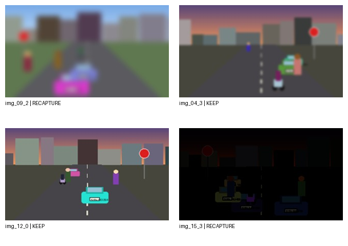
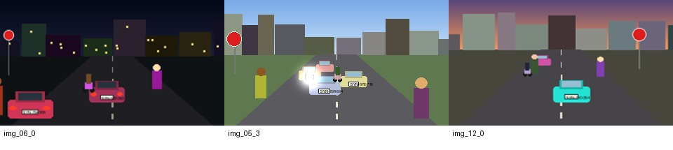

Ưu tiên ảnh mờ, lóa, tối và lỗi nén để review trong ngân sách 20 ảnh.
Trần Xuân Bắc · G0696 ảnh synthetic · CPU · offline

Đọc ảnh → chấm điểm → xếp hạng → review → KEEP / RECAPTURE
make run TRACK=t02 OUT=out/t02 open out/t02/poc/contact_sheet.html

Ảnh đêm hữu ích bị loại · Glare cục bộ lọt baseline · Camera mềm bị báo nhầm
Không khẳng định PoC tốt hơn baseline khi chưa có điểm chính thức.